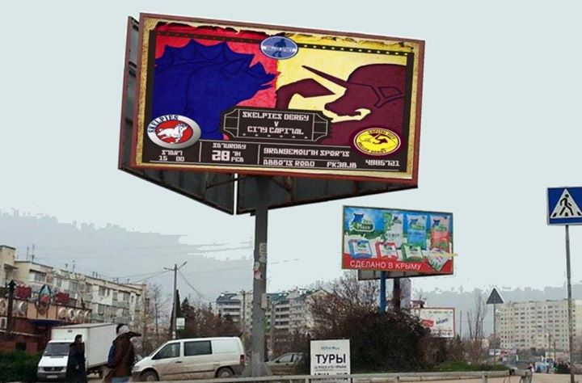

BCR Skelpies vs CCRD Mighty Unicorns February 28th 2015
There has been a big buzz surrounding the British Roller Derby Champs which kicked off recently and grew out of the heartlands series. Many of the skaters from leagues taking part are now eagerly awaiting their first game in what is Europe's largest Roller Derby tournament, comprising 72 women’s leagues from England, Scotland, Wales and Northern Ireland. Along with 10 men's leagues also competing in the men's side of the tournament. With all this going on you may be fooled into thinking that this is the next big new competition for women's and men’s derby, and you may be right. But here in Scotland we now have something new and very exciting to look forward to with our men's derby.
After a considerable amount of discussions between Scottish Men's Derby Leagues over the last couple of years, there will be a brand new tournament taking place this year. The 28th of February 2015 will go down in Scottish derby history as the opening day and first ever game of the newly created Scottish Men's Roller Derby Nationals (SMRDNs).
 Poster by Cara Scott (Beatrix Slaughter of BCR)
Poster by Cara Scott (Beatrix Slaughter of BCR)
Bairn City Rollers have the honor of hosting the first of the three games being played this year as part of the SMRDNs. This game will take place at Grangemouth Sports Complex on Saturday the 28th of February, doors are at 3pm and tickets are now available online. For more information on this visit the event page over on Facebook here: https://www.facebook.com/events/1528686777405809/
Capital City are a relatively new bouting team having played their first ever game in November of last year, whilst BCR have been bouting since 2013 and have six public bouts to their name. It may be hard to believe, but this game will be only the second time that two Scottish Men's derby teams have played each other in a public bout. Out of all the three bouting Scottish men's leagues, only BCR and Mean City have played each other in a public bout. That encounter ended with BCR taking the win and the bragging rights. So come the 28th, BCR will be making sure they will do everything possible to extend that undefeated run against Scottish men's derby opponents.
Both sides are expecting it to be an explosive encounter and great inaugural game for the SMRDNs. As starting with a win, will be the best way to be crowned the 2015 SMRDN champions, because both teams will only have 1 more SMRDN game to play this year. After the 28th, the two remaining games will be Mean City vs BCR and the East vs West line up of Capital City v Mean City.
With it being the first game in the newly created SMRDNs there has been a lot of excitement and interest in the game and if BCR Skater Archibald Wreck would have us believe there has been a furore of excitement in Russia and Japan since the game was announced.
 Image by Archibald Wreck (Graeme McPhail) of BCR
Image by Archibald Wreck (Graeme McPhail) of BCR
 Image by Archibald Wreck (Graeme McPhail) of BCR

{kind=link}